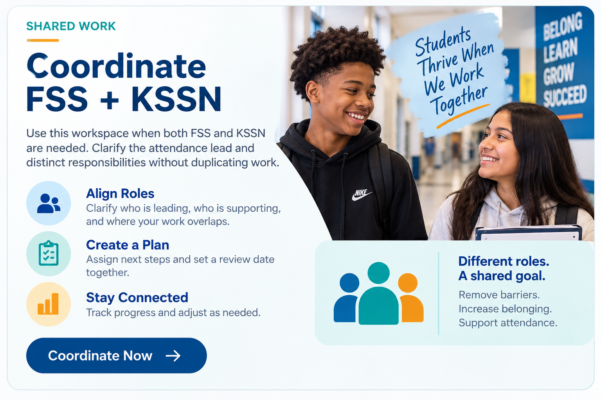

Family Support Specialist & Kent School Services Integration
ATTENDANCE SUPPORT • GRPS
One barrier. One coordinated response.
Use the platform to understand what is getting in the way of attendance, determine who needs to act, and move toward a response that makes a difference for the scholar and family.
Start with the barrier—not the role.

START WHERE YOU ARE
What do you need to do?
Three entry points. The deeper tools appear when you need them.
FSS
Attendance-focused family intervention, planning, follow-up, and monitoring.
KSSN
Community School strategy, integrated supports, partners, resources, and system connections.
Shared
One barrier hypothesis, coordinated family contact, distinct responsibilities, and one review point.
Work through an attendance concern
One workspace. The next step stays visible without sending you through multiple pages or pathways.
STEP 01
What is happening with attendance?
Start with evidence and voice. Do not decide the intervention—or the role—before understanding what is happening.
Attendance pattern
What does the data show? What changed? When does the concern occur?
Scholar + family voice
What are they experiencing? What is going well? What do they believe is making attendance harder?
Need help with the conversation? The Caring Conversation Guide would open here as a supporting drawer—not take you to another pathway.
USE A TOOL WITHOUT LEAVING THIS WORKNeed help understanding the barrier or building the response?
Coordinate FSS + KSSN
One plan with clear responsibilities. Overlap is intentional; duplication is not.
Attendance lead
Name one person responsible for keeping the attendance goal and review point moving.
FSS contribution
Family voice, attendance intervention, plan, follow-through, and monitoring.
KSSN contribution
Resource fit, partner coordination, access, integrated supports, and repeated-gap response.
Build the coordinated response
Shared barrier
Distinct responsibilities
TOOLS & RESOURCES
Open the tool you need.
No pathway to complete first. Choose the work in front of you and use the tool in place.
OPERATING FRAMEWORK
How We Work
Use the framework to move from an attendance concern to a coordinated response—and to recognize when one case is pointing to a larger system issue.
Start with the barrier—not the role.
The framework keeps the team focused on what is affecting attendance before deciding who should act.
Pattern → Barrier → Ownership → Support → Impact
→
→
→
→
STEP 01 · PATTERN
Notice the attendance pattern.
Use attendance data, context, and scholar/family voice to describe what is happening before jumping to a solution.
Ask: When is the absence occurring? What changed? What does the scholar or family say? What strengths can we build on?
OUTPUTA clear description of the attendance concern.
OWNERSHIP + SUPPORT
Different roles. One coordinated response.
Ownership changes with the barrier. These are functions—not separate cases.
FSS
Attendance-focused family intervention
Family voice, attendance planning, barrier-focused intervention, follow-through, and monitoring.
SHARED WORK
Coordinate when both functions add value
One barrier hypothesis, one attendance lead, distinct responsibilities, coordinated family contact, and one review point.